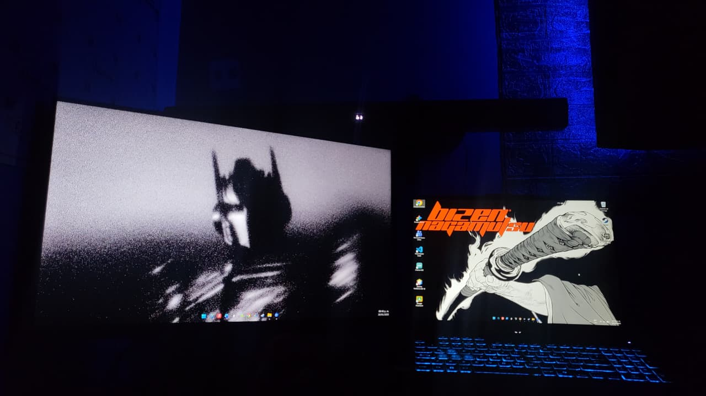

Programación y Lógica

Noches de código

Mi Setup
Más que escribir líneas de código, me apasiona la resolución de problemas. La programación entrena mi mente para pensar de forma lógica y estructurada. Disfruto el desafío de transformar una idea abstracta en una solución funcional, ya sea automatizando tareas con Python o creando interfaces web. Es aquí donde la creatividad se encuentra con la ingeniería.